GITHUB
Dr. Ajay Kumar Koli (PhD) \(\cdot\) SARA Institute of Data Science, India
Track Changes in MS Word

😢
Version Control
Version control is a system that records changes to a file or set of files over time so that you can recall specific versions later. (Atlassian 2025)
Version control is like a time machine for your files. It keeps track of all the changes made to your documents, code, or any other files over time. (Le Chat)
😍 Why use Version Control?
- Avoid Losing Work:
- Ever accidentally deleted something important? With version control, you can easily recover previous versions of your files.
- Collaborate Easily:
- Working with a team? Version control allows multiple people to work on the same project without overwriting each other’s changes.
- Track Changes:
- Know exactly who made what changes and when. This is especially useful for keeping track of progress and identifying issues.
- Experiment Safely:
- Want to try something new without risking your current work? Version control lets you create branches to experiment with new ideas. If it doesn’t work out, you can always go back to the original version.
Tracking + Version in Google Docs

Work Journey is Less Painful with Version Control
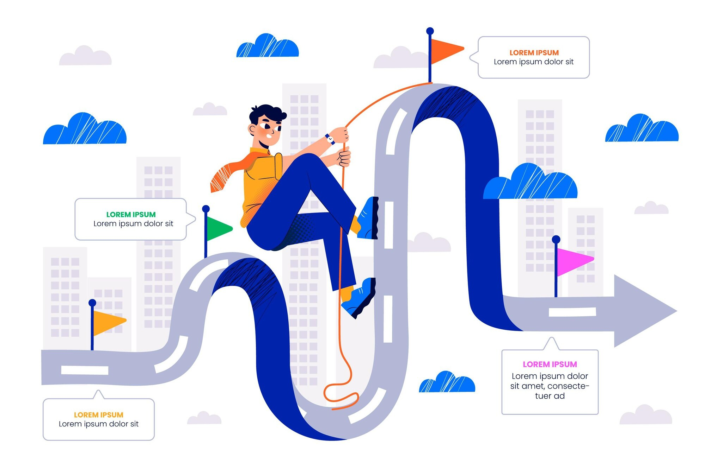


Git
- It is a free and open-source distributed version control system (Git Official Webpage, n.d.).
Install Git
Install Git
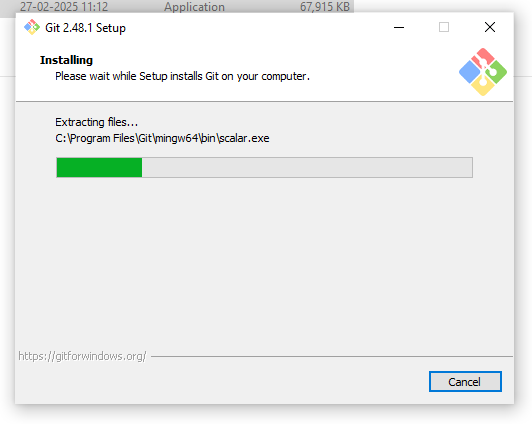
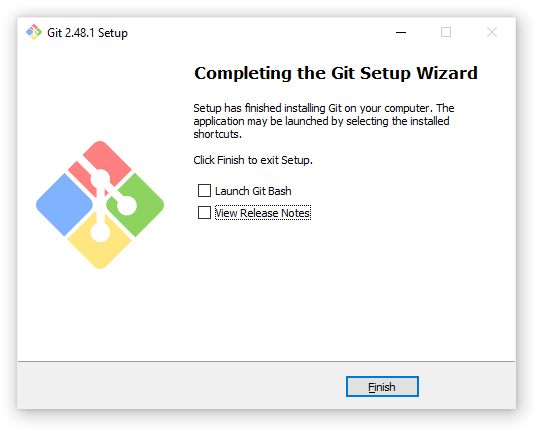
Open Terminal git --version
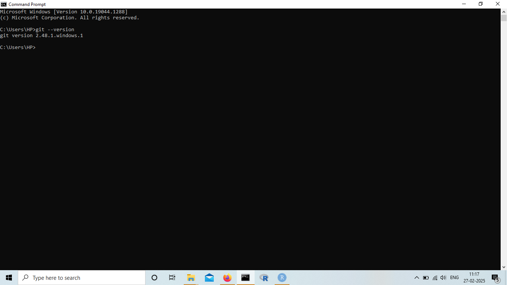GitHub
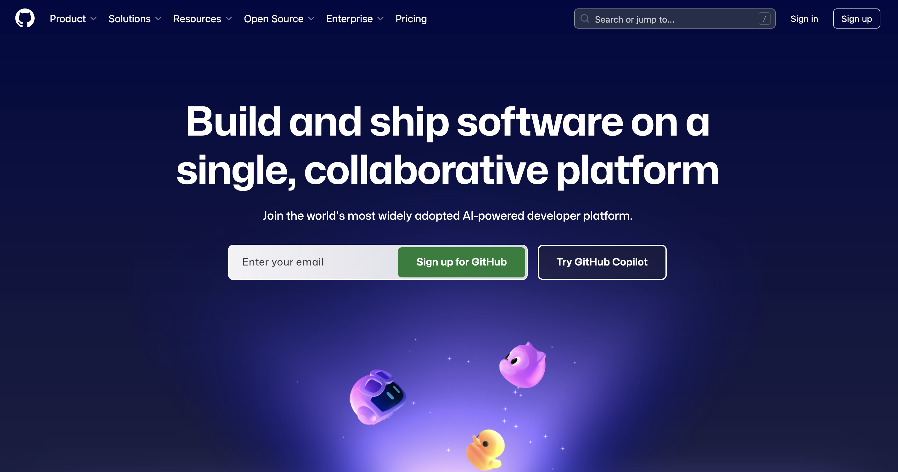
GitHub
A platform for hosting and collaborating on Git repositories.
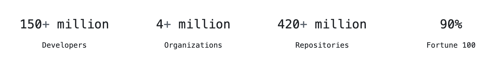
GitHub Sign up
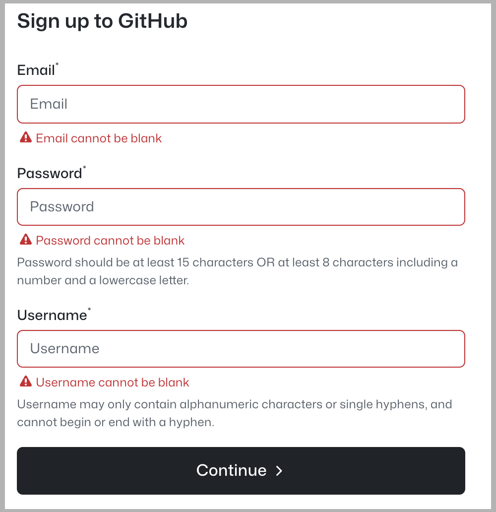
- Username advice
- all small cases
- use hyphen
-to separate the words - the shorter the better
- make it timeless (do not ajay-jnu, ajay-ny, ajay-microsoft)
- avoid special characters
- reuse from your social media
- comfortable to reveal to the world
GitHub Settings
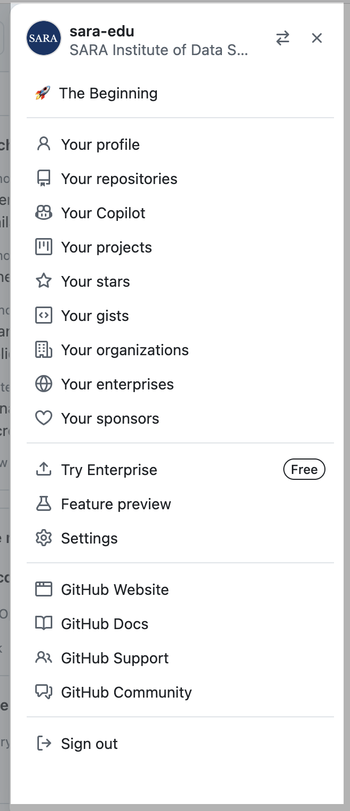
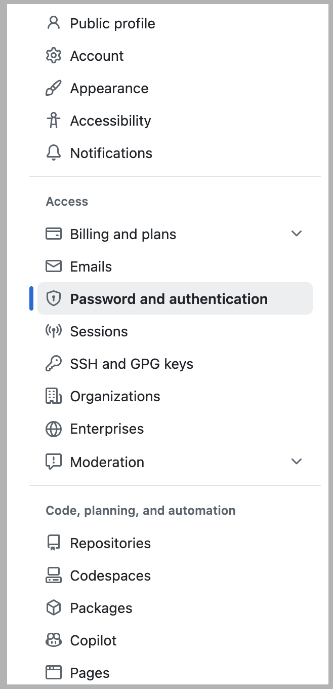
Enable Two Factor Authentication
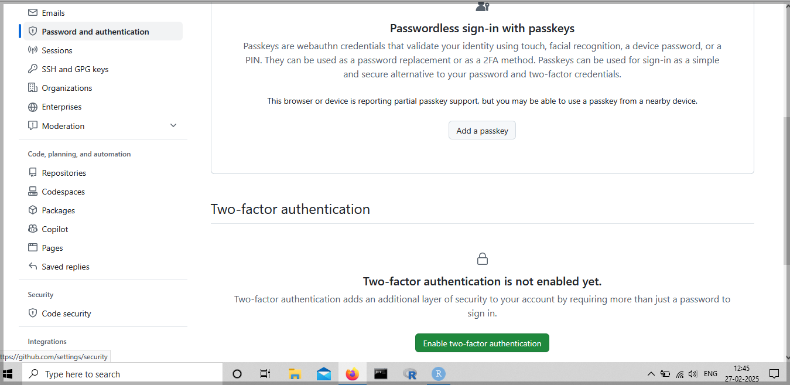Enable Two Factor Authentication
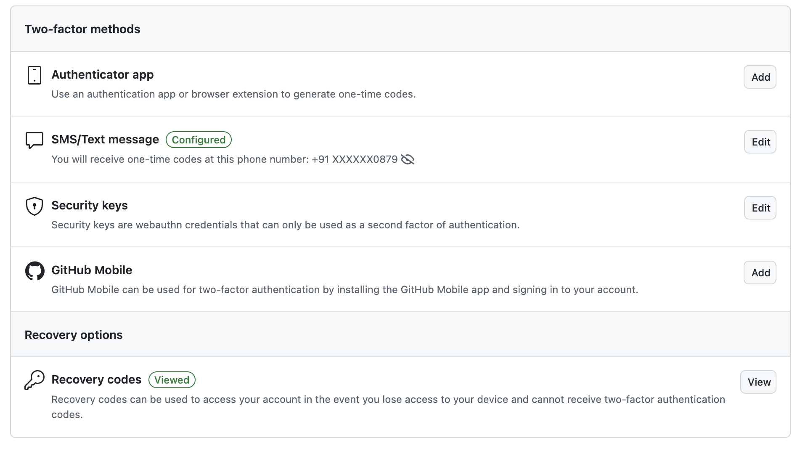RStudio \(\rightarrow\) Tools \(\rightarrow\) Global Options \(\rightarrow\) Git/SVN
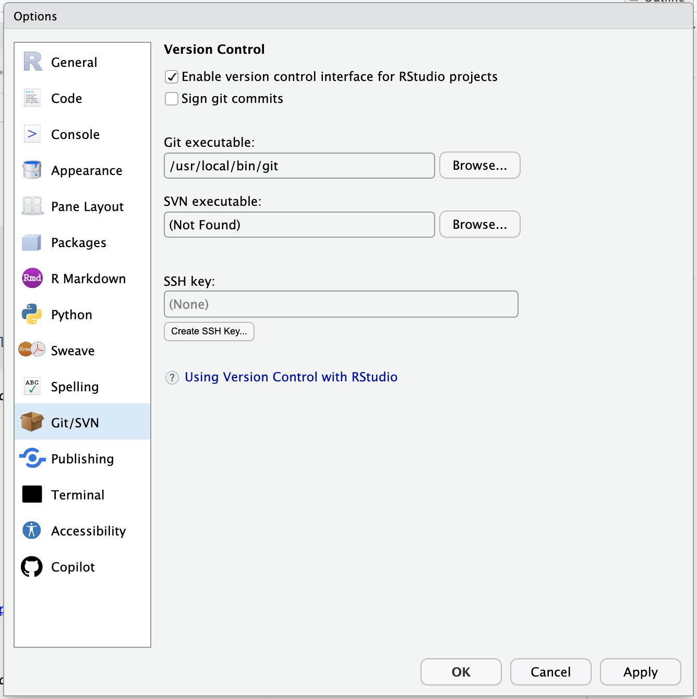Save GitHub Username in RStudio
- Using Console, Install R package
usethis
- To See Saved Credentials, Run in Terminal
git config --global --list
GitHub’s Personal Access Token (PAT)
It is a way to authenticate and interact with GitHub’s API and repositories without using your username and password.
Create GitHub’s PAT in Console
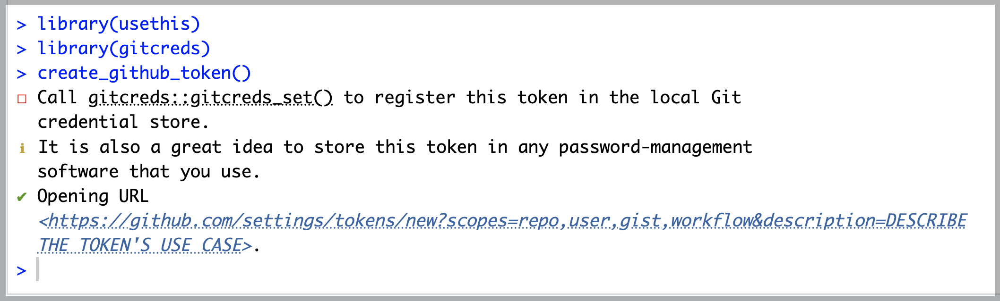
Personal Access Token (PAT)
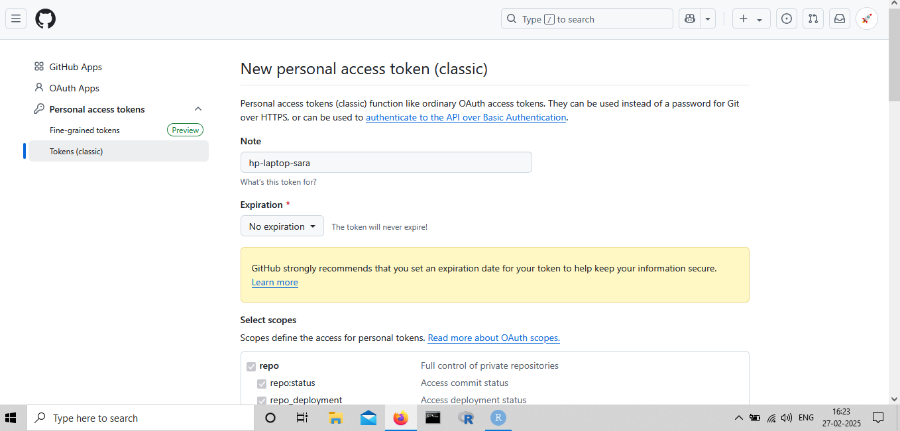Personal Access Token (PAT)
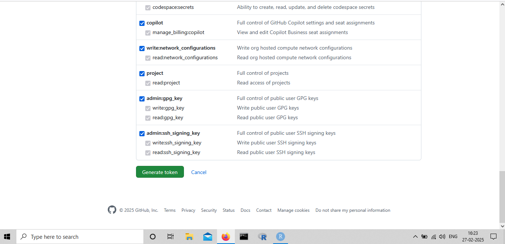Add PAT
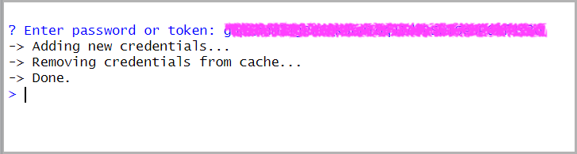
View GitHub Credentials
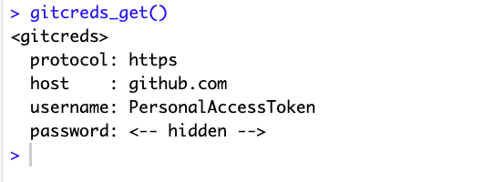
- To See Saved Credentials, Run in Terminal
git config --global --list
References
Atlassian. 2025. “Learn Git - Tutorials, Workflows and Commands.” https://www.atlassian.com/git.
Chacon, Scott, and Ben Straub. 2014. Pro Git. 2nd ed. edition. New York, NY: Apress.
Git Official Webpage. n.d. “Git.” https://git-scm.com/.